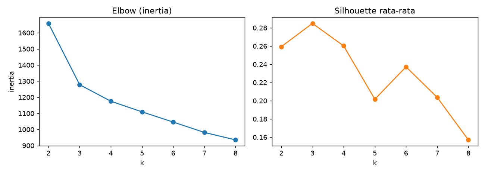

Memilih Jumlah Klaster dan Validasi¶
Tujuan pembelajaran¶
- Memakai elbow, silhouette, Davies-Bouldin, dan Calinski-Harabasz untuk memilih \(k\).
- Menilai kestabilan klaster dengan bootstrap.
- Membedakan validasi internal dan eksternal serta batasan masing-masing.
Metrik internal¶
Metrik internal menilai klaster tanpa label, dari kepadatan dan keterpisahan:
| Metrik | Arah terbaik | Arti |
|---|---|---|
| Inertia (jumlah kuadrat dalam klaster) | Turun terus saat \(k\) naik; cari "siku" | Kekompakan; selalu membaik bila \(k\) ditambah |
| Silhouette | Maksimum (rentang -1 sampai 1) | Seberapa dekat titik ke klasternya dibanding klaster terdekat lain |
| Davies-Bouldin | Minimum | Rasio sebaran dalam klaster terhadap jarak antar-klaster |
| Calinski-Harabasz | Maksimum | Rasio variasi antar-klaster terhadap dalam-klaster |
Untuk satu titik \(i\) dengan jarak rata-rata ke klasternya \(a_i\) dan jarak rata-rata ke klaster terdekat lainnya \(b_i\):
Silhouette klaster atau keseluruhan adalah rata-rata \(s_i\). Nilai dekat 1 berarti klaster jelas; dekat 0 berarti tumpang tindih; negatif berarti titik mungkin salah klaster.
Validasi eksternal dan kestabilan¶
- Validasi eksternal membandingkan klaster dengan label acuan yang diketahui: Adjusted Rand Index (ARI; 1 = identik, ≈ 0 = acak) dan Normalized Mutual Information (NMI). Hanya mungkin bila ada label acuan, dan label itu pun belum tentu "kebenaran".
- Kestabilan: klasterkan sampel bootstrap lalu bandingkan dengan klaster data penuh (ARI pada titik yang terambil). Klaster yang stabil muncul kembali pada sampel berbeda.
Implementasi langkah demi langkah¶
Wine terstandardisasi, k-Means dengan \(k = 2, \dots, 8\). Kolom ARI_vs_kultivar hanya tersedia karena Wine punya label; pada masalah nyata kolom ini tidak ada. Program examples/clustering/choose_k.py; program lengkap ada di akhir bagian ini.
Langkah 1: metrik internal untuk setiap \(k\)¶
Tujuan. Mengumpulkan beberapa ukuran kualitas untuk tiap jumlah klaster, tanpa memakai label.
| Kode | Penjelasan |
|---|---|
for k in range(2, 9) |
Mencoba \(k = 2, 3, \dots, 8\) (range(2, 9) berhenti sebelum 9). |
KMeans(n_clusters=k, ...).fit(Z) |
Melatih k-Means untuk tiap k. |
km.inertia_ |
Jumlah kuadrat jarak ke pusat (selalu turun saat k naik). |
silhouette_score(Z, km.labels_) |
Rata-rata silhouette (makin besar makin baik). |
davies_bouldin_score, calinski_harabasz_score |
Davies-Bouldin (makin kecil makin baik) dan Calinski-Harabasz (makin besar makin baik). |
adjusted_rand_score(y, km.labels_) |
Validasi eksternal terhadap kultivar (hanya karena label ada). |
table["silhouette"].idxmax() |
Nilai indeks (k) dengan silhouette tertinggi. |
inertia silhouette davies_bouldin calinski_harabasz ARI_vs_kultivar
k
2 1658.759 0.259 1.526 69.523 0.374
3 1277.928 0.285 1.389 70.940 0.897
4 1175.428 0.260 1.797 56.181 0.765
5 1109.513 0.202 1.808 46.952 0.599
6 1046.002 0.237 1.554 41.701 0.639
7 981.595 0.204 1.661 38.686 0.566
8 935.201 0.157 1.741 35.805 0.415
k terbaik menurut silhouette (maks.): 3 | Davies-Bouldin (min.): 3 | Calinski-Harabasz (maks.): 3
Interpretasi. Tiga metrik internal sepakat pada \(k=3\): silhouette tertinggi (0,285), Davies-Bouldin terendah (1,389), dan Calinski-Harabasz tertinggi (70,9). Tidak selalu sesepakat ini. Silhouette 0,285 tergolong rendah: ada struktur, tetapi klaster saling berdekatan (pedoman umum: > 0,5 kuat, 0,25–0,5 lemah; ini rule of thumb, bukan standar). Validasi eksternal: ARI tertinggi pada \(k=3\) (0,897); pada \(k=2\) turun ke 0,374 karena dua kultivar digabung.
Langkah 2: metode siku (elbow)¶
| choose_k.py | |
|---|---|
table["inertia"].diff() menghitung selisih inertia tiap k dengan k sebelumnya (negatif karena inertia turun); dengan tanda minus dan pembagian terhadap inertia k-1, hasilnya persentase penurunan.
Interpretasi. Inertia turun 23,0% dari \(k=2\) ke \(k=3\), tetapi hanya 8,0% (\(k=4\)), 5,6% (\(k=5\)), dan seterusnya sekitar 5%: siku jelas di \(k=3\). Pada banyak data siku tidak setegas ini dan sulit ditentukan.
Langkah 3: kestabilan dengan bootstrap¶
Konsep. Klaster yang nyata seharusnya muncul kembali pada sampel data yang sedikit berbeda. Kita mengambil sampel bootstrap (pengambilan acak dengan pengembalian), mengklasterkannya, dan membandingkan dengan klaster data penuh pada titik-titik yang sama.
| Kode | Penjelasan |
|---|---|
rng.integers(0, len(Z), len(Z)) |
Nomor baris acak sebanyak data (boleh berulang) = sampel bootstrap. |
np.unique(...) |
Baris yang terambil, tanpa duplikat. |
KMeans(...).fit_predict(Z[idx]) |
Klastering sampel bootstrap dengan seed acak berbeda. |
adjusted_rand_score(full[idx], boot) |
Kecocokan klaster bootstrap dengan klaster data penuh pada titik-titik terambil. |
np.mean(aris) |
Rata-rata ARI atas 30 bootstrap = skor kestabilan. |
Interpretasi. \(k=3\) sangat stabil (ARI 0,961) sedangkan \(k=2\) (0,675), \(k=4\) (0,781), \(k=5\) (0,631), dan \(k=6\) (0,661) kurang stabil. Kestabilan memberi bukti tambahan yang tidak bergantung pada label.
Langkah 4: gambar elbow dan silhouette¶

Cara membaca. Sumbu-x adalah jumlah klaster \(k\). Grafik kiri (inertia) selalu menurun; cari titik tempat penurunan melandai (siku), di sini sekitar \(k=3\). Grafik kanan (silhouette) mencapai puncak pada \(k=3\). Kesepakatan ini tidak menjamin metrik internal selalu menemukan \(k\) yang bermakna (lihat pembahasan perbandingan); gabungkan beberapa bukti dan kebutuhan bisnis.
Program lengkap (choose_k.py)
Kesalahan umum¶
Hindari
- Memilih \(k\) hanya dari inertia (selalu turun).
- Mempercayai satu metrik internal saja.
- Memakai ARI sebagai ukuran akurasi seolah label acuan pasti benar.
- Melaporkan \(k\) tanpa kestabilannya.
- Mengabaikan kegunaan praktis: 3 vs 4 segmen mungkin lebih berguna bagi bisnis meski metriknya sedikit lebih rendah.
Latihan¶
- Ulangi dengan
AgglomerativeClustering(Ward) pada \(k = 2..8\). Apakah \(k\) terbaiknya sama? - Naikkan jumlah bootstrap menjadi 100. Apakah urutan kestabilan berubah?
- Hitung silhouette per klaster untuk \(k=3\) (
silhouette_samples). Klaster mana yang paling longgar?
Ringkasan¶
Pilih \(k\) dengan gabungan elbow, silhouette, Davies-Bouldin, dan Calinski-Harabasz, ditambah kestabilan dan kegunaan. Validasi eksternal berguna jika ada label acuan, tetapi bukan pengganti penilaian internal.
Berikutnya: Perbandingan Algoritma dan Optimasi Parameter.